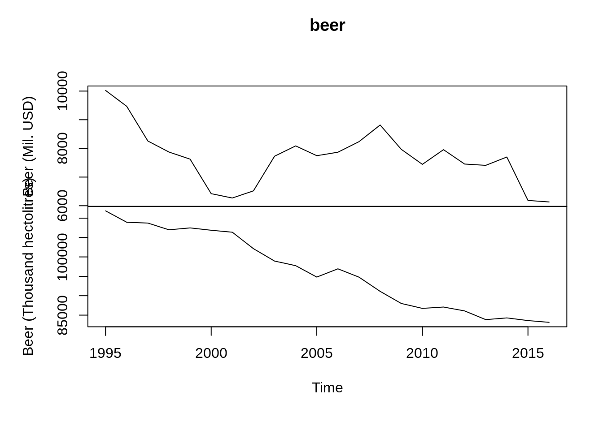
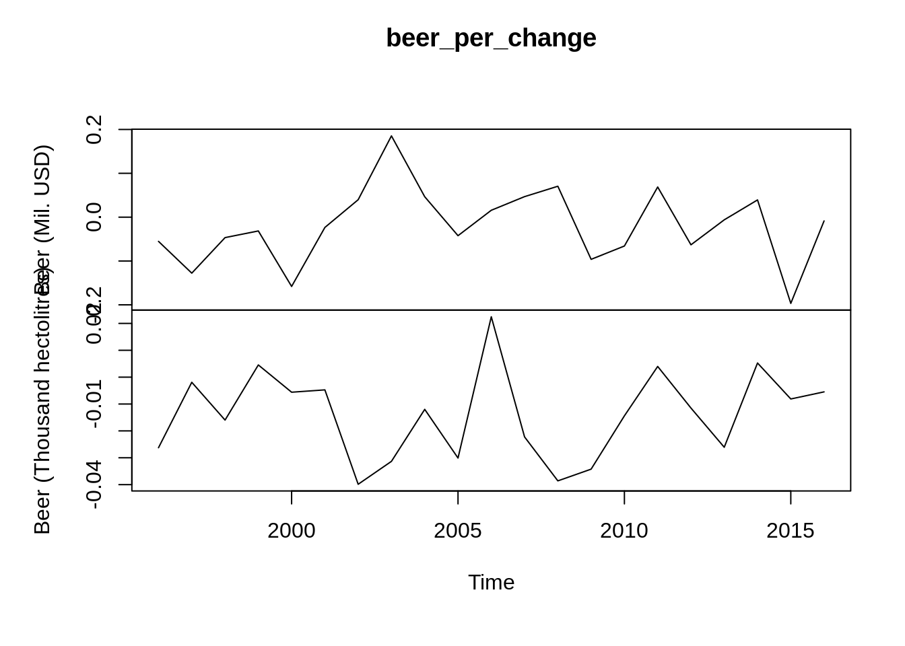

Chapter 4 Introduction to Quandl()
Aiqi Zhou (az2638)
Quandl::Quandl()
4.1 INTRODUCTION
Quandl is a source of financial, economic and alternative data. It is acquired by Nasdaq in 2018 and has 20+ million data sets available. Users can acquire free data, purchase data or sell data at Quandl.
You can find data on a large variety of types of data from company data to the demographics data of a country. More can be explored on Quandl’s website. https://www.quandl.com/search
The data is readily available in json, csv, xml formats and can be loaded in MatLab, R, Python, etc.
All the data can be loaded in R through the package Quandl.
4.1.1 Installation :
- install.packages(“Quandl”)
4.1.3 Set API key
Quandl allows 50 calls a day for anonymous users. Sign up for a free account to make unlimited calls every day.
Set up your own account and copy your api_key into the following function
Quandl.api_key(‘your_key’)
4.1.4 Loading Data
All available data can be found and viewed on https://www.quandl.com/search. This package includes many free datasets, however, some datasets requires an account or is for paid use only.
To call on a data set in R. You must find the Quandl code of the data set. The codes can be found in the documentation page of the data set.
4.1.4.1 For example
The follow dataset is called the “Federal Reserve Economic Data”, which has the code FRED. This dataset has 335,000+ time-series data.
To call on certain aspect like the GDP of this data set, the Quandl code is “FRED/GDP”.
## Date Value
## 1 2020-10-01 21487.90
## 2 2020-07-01 21170.25
## 3 2020-04-01 19520.11
## 4 2020-01-01 21561.14
## 5 2019-10-01 21747.39
## 6 2019-07-01 21540.33To call on another aspect like disposable personal income, the Quandl code is “FRED/DSPI”
## Date Value
## 1 2021-01-01 19217.7
## 2 2020-12-01 17254.5
## 3 2020-11-01 17151.4
## 4 2020-10-01 17398.9
## 5 2020-09-01 17546.8
## 6 2020-08-01 17430.44.1.5 Type
The data can be called in different formats. The default of the data is data frame, which can have an argument type = “raw”
- “raw”
- “ts”
- “zoo”
- “xts”
- “timeSeries”
## [,1]
## 1947 Q1 243.164
## 1947 Q2 245.968
## 1947 Q3 249.585
## 1947 Q4 259.745
## 1948 Q1 265.742
## 1948 Q2 272.567## [1] 243.164 245.968 249.585 259.745 265.742 272.567## 1947 Q1 1947 Q2 1947 Q3 1947 Q4 1948 Q1 1948 Q2
## 243.164 245.968 249.585 259.745 265.742 272.5674.1.6 Transform
There are some preprocessing can be done when loading the data. By adding a transform argument in Quandl(), the data can have the following types of transformations.
- "" = Default original data
- “diff” = row on row change in value
- “rdiff” = row on row percentage change
- “normalize” = scale to start at 100
- “cumul” = cumulative sum
- “rdiff_from” = latest value as % increment
4.1.6.1 For example the percentage change of GDP by year
## Date Value
## 1 2020-10-01 0.015004262
## 2 2020-07-01 0.084535264
## 3 2020-04-01 -0.094662207
## 4 2020-01-01 -0.008564474
## 5 2019-10-01 0.009613086
## 6 2019-07-01 0.0098663494.1.7 Order
The data can be ordered by date upon it is loaded. Default is descending order by date. - “desc” - “asc”
## Date Value
## 1 1947-01-01 243.164
## 2 1947-04-01 245.968
## 3 1947-07-01 249.585
## 4 1947-10-01 259.745
## 5 1948-01-01 265.742
## 6 1948-04-01 272.5674.1.8 collapse
Since all data have a time associated. Quandl allows you to preprocess the data by specifying the frequency of the data.
- ’’
- ‘daily’
- ‘weekly’
- ‘monthly’
- ‘quarterly’
- ‘annual’
## Date Value
## 1 2020-12-31 21487.90
## 2 2020-09-30 21170.25
## 3 2020-06-30 19520.11
## 4 2020-03-31 21561.14
## 5 2019-12-31 21747.39
## 6 2019-09-30 21540.334.1.9 Slicing data
4.1.9.1 Rows
Because the data we are using is time series data, we can specify the range of row of the data set, using the start and end date arguments.
## Date Value
## 1 2005-10-01 13332.32
## 2 2005-07-01 13142.87
## 3 2005-04-01 12910.02
## 4 2005-01-01 12761.34
## 5 2004-10-01 12522.42
## 6 2004-07-01 12303.344.1.9.2 Columns
To get multiple columns of data from Quandl, the data can be called in the format: Quandl(c(“col_1”, “col_2”))
mydata = Quandl(c("FRED/GDP", "FRED/DSPI"),start_date="2001-12-31", end_date="2005-12-31")
head(mydata)## Date FRED.GDP - Value FRED.DSPI - Value
## 1 2002-01-01 10788.95 7962.4
## 2 2002-02-01 NA 7981.9
## 3 2002-03-01 NA 8003.6
## 4 2002-04-01 10893.21 8066.8
## 5 2002-05-01 NA 8099.5
## 6 2002-06-01 NA 8127.24.1.10 Finding a dataset in Quandl
You can look for certain data sets within R using Quandl.search()
Format:
Quandl.search(query = “search keyword”, page = # , source = “source to search from if known”, silent = TRUE/FALSE)
- query: mandatory argument that you want to search for
- page: which page of search result you want. Default page = 1.
- source: specific source you want to search from.
- silent: print the results when FALSE. Nothing prints when true.
4.1.10.1 Example search for Japan
## Japanese Intervention: Japanese Bank purchases of USD against JPY
## Code: FRED/JPINTDUSDJPY
## Desc: 100 Million Yen Not Seasonally Adjusted, (+) numbers mean purchases of the USD (sell Yen), (-) numbers mean sales of USD (buy Yen). Unpublished data.
## Freq: daily
## Cols: DATE | VALUE
##
## NASDAQ Japan Retail JPY Index (NQJP5300JPY)
## Code: NASDAQOMX/NQJP5300JPY
## Desc: For detailed information, see <a href=https://indexes.nasdaqomx.com/Index/Overview/NQJP5300JPY>https://indexes.nasdaqomx.com/Index/Overview/NQJP5300JPY</a>
## Freq: daily
## Cols: Trade Date | Index Value | High | Low | Total Market Value | Dividend Market Value
##
## NASDAQ Japan Media JPY Index (NQJP5500JPY)
## Code: NASDAQOMX/NQJP5500JPY
## Desc: For detailed information, see <a href=https://indexes.nasdaqomx.com/Index/Overview/NQJP5500JPY>https://indexes.nasdaqomx.com/Index/Overview/NQJP5500JPY</a>
## Freq: daily
## Cols: Trade Date | Index Value | High | Low | Total Market Value | Dividend Market Value
##
## NASDAQ Japan Tech JPY Index (NQJP9000JPY)
## Code: NASDAQOMX/NQJP9000JPY
## Desc: For detailed information, see <a href=https://indexes.nasdaqomx.com/Index/Overview/NQJP9000JPY>https://indexes.nasdaqomx.com/Index/Overview/NQJP9000JPY</a>
## Freq: daily
## Cols: Trade Date | Index Value | High | Low | Total Market Value | Dividend Market Value
##
## NASDAQ Japan Telecom JPY Index (NQJP6000JPY)
## Code: NASDAQOMX/NQJP6000JPY
## Desc: For detailed information, see <a href=https://indexes.nasdaqomx.com/Index/Overview/NQJP6000JPY>https://indexes.nasdaqomx.com/Index/Overview/NQJP6000JPY</a>
## Freq: daily
## Cols: Trade Date | Index Value | High | Low | Total Market Value | Dividend Market Value
##
## NASDAQ Japan Utilities JPY Index (NQJP7000JPY)
## Code: NASDAQOMX/NQJP7000JPY
## Desc: For detailed information, see <a href=https://indexes.nasdaqomx.com/Index/Overview/NQJP7000JPY>https://indexes.nasdaqomx.com/Index/Overview/NQJP7000JPY</a>
## Freq: daily
## Cols: Trade Date | Index Value | High | Low | Total Market Value | Dividend Market Value
##
## NASDAQ Japan Banks JPY Index (NQJP8300JPY)
## Code: NASDAQOMX/NQJP8300JPY
## Desc: For detailed information, see <a href=https://indexes.nasdaqomx.com/Index/Overview/NQJP8300JPY>https://indexes.nasdaqomx.com/Index/Overview/NQJP8300JPY</a>
## Freq: daily
## Cols: Trade Date | Index Value | High | Low | Total Market Value | Dividend Market Value
##
## NASDAQ Japan Inds JPY Index (NQJP2000JPY)
## Code: NASDAQOMX/NQJP2000JPY
## Desc: For detailed information, see <a href=https://indexes.nasdaqomx.com/Index/Overview/NQJP2000JPY>https://indexes.nasdaqomx.com/Index/Overview/NQJP2000JPY</a>
## Freq: daily
## Cols: Trade Date | Index Value | High | Low | Total Market Value | Dividend Market Value
##
## NASDAQ Japan Ins JPY Index (NQJP8500JPY)
## Code: NASDAQOMX/NQJP8500JPY
## Desc: For detailed information, see <a href=https://indexes.nasdaqomx.com/Index/Overview/NQJP8500JPY>https://indexes.nasdaqomx.com/Index/Overview/NQJP8500JPY</a>
## Freq: daily
## Cols: Trade Date | Index Value | High | Low | Total Market Value | Dividend Market Value
##
## NASDAQ Japan Financials JPY Index (NQJP8000JPY)
## Code: NASDAQOMX/NQJP8000JPY
## Desc: For detailed information, see <a href=https://indexes.nasdaqomx.com/Index/Overview/NQJP8000JPY>https://indexes.nasdaqomx.com/Index/Overview/NQJP8000JPY</a>
## Freq: daily
## Cols: Trade Date | Index Value | High | Low | Total Market Value | Dividend Market ValueYou can pick which data set to use from the search result.
4.1.11 Example
The following is a quick example of getting data from the data set United Nations Industrial Commodities. From the documentation of this data set, we can learn what we are interested in. https://www.quandl.com/data/UINC-United-Nations-Industrial-Commodities
Here I want to plot the time series data of Beer production of Germany. The code for this information is “UINC/BEER_DEU”. I want to plot the time series, then the data need to be in the form of “ts”
## Beer (Mil. USD) Beer (Thousand hectolitres)
## [1,] 10021.504 111875.4
## [2,] 9468.029 108937.5
## [3,] 8258.888 108729.5
## [4,] 7873.553 106993.0
## [5,] 7625.868 107479.3
## [6,] 6420.827 106877.4 If I want to see the yearly percentage change of the data, we need to add a transform argument “rdiff”
